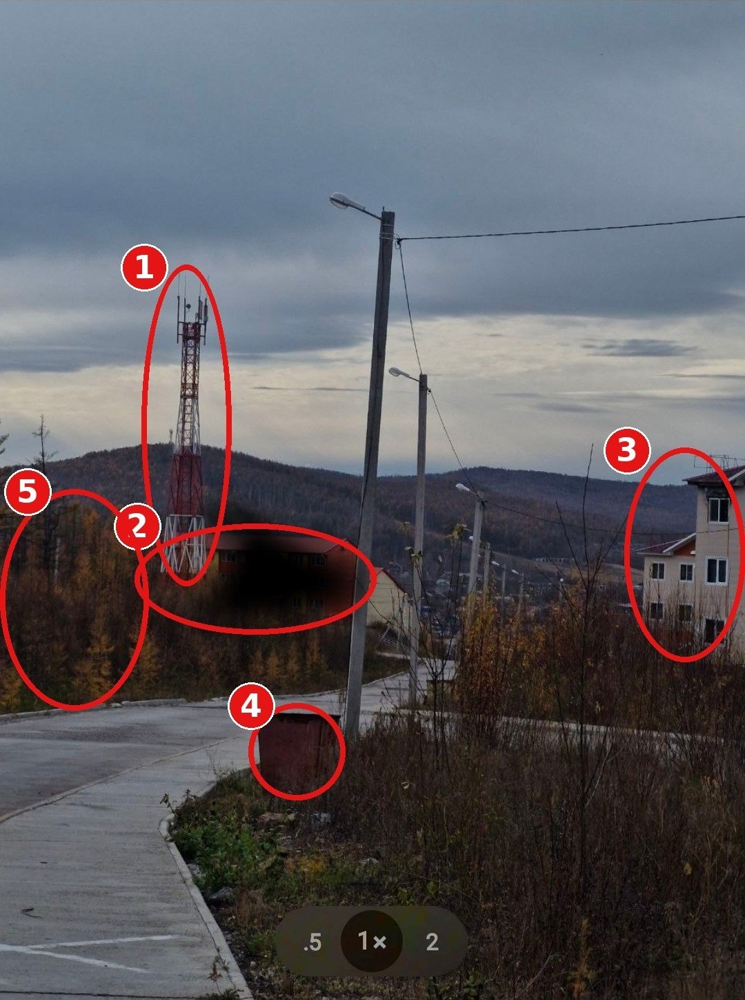
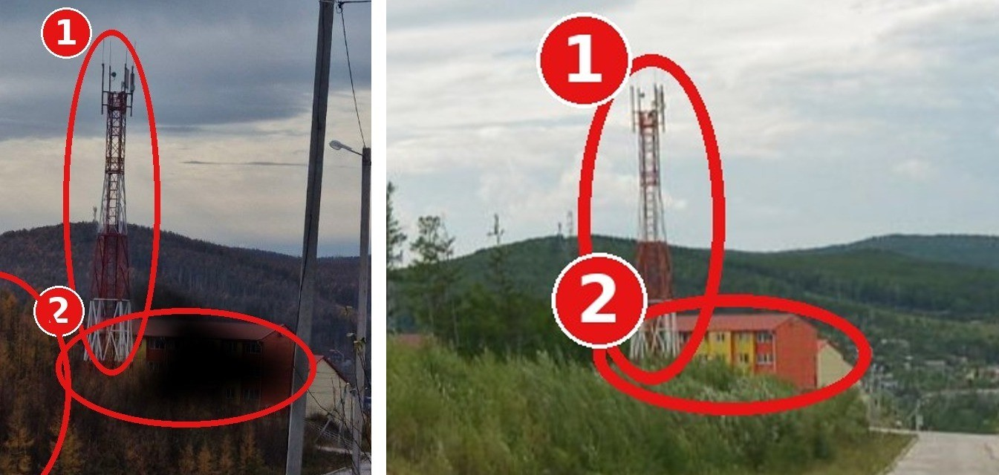

Задача
Нужно определить место съёмки по фотографии. Из условия известна только страна — Россия. На кадре видны посёлок на склоне, бетонная дорога, красно-белая сотовая вышка, трёхэтажный дом и осенний лес.

Значок MTS на экране телефона показывает SIM-карту владельца, а не оператора вышки в кадре. Этот признак не использовался как доказательство места.
Ход решения
01. Сузили регион по ландшафту
Жёлтая хвоя лиственниц и невысокие таёжные сопки указывали на восточную часть России. Тип трёхэтажной застройки напоминал дома, которые возводили в городах и посёлках БАМа.
02. Зацепились за редкую деталь
У одного дома заметны закопчённые окна. Публикации о пожарах помогли найти похожую застройку в Тынде, микрорайоне Таёжный. Новость дала направление поиска, но дом из неё не принимался за тот же дом на снимке.
03. Проверили по панораме
На панораме Яндекса 2024 года совпали взаимное положение вышки и здания с красной крышей, трёхэтажный дом справа, красный контейнер, дорога из плит и опоры освещения. Сезон на снимках разный, поэтому сверялись постоянные объекты.

55.162291, 124.772678
Полная цепочка поиска, таблица совпадений и список источников доступны в оригинальном райтапе PDF.